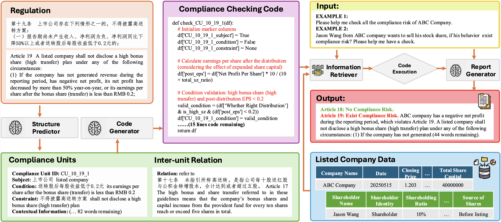

Note:
- This repository is currently under construction.
- This repository is for academic purposes only. It does not represent the views of any organization, institution, or individual, and should not be considered legal or investment advice.
📖Paper | 🏠Homepage | 🤗Huggingface Dataset
Regulatory compliance is crucial for corporate governance, but financial regulations are often intricate and challenging to interpret. While Large Language Models (LLMs) show promise in automating the conversion of regulatory text to compliance logic, they face limitations with Chinese financial regulations, including incomplete domain knowledge and insufficient reasoning. To address this, we introduce Compliance-to-Code, the first large-scale Chinese dataset for financial regulatory compliance. It contains 1,159 annotated clauses from 361 regulations, structured into logical elements with Python code mappings and detailed reasoning. We also present FinCheck, a pipeline for regulation structuring, code generation, and report generation, demonstrating the dataset’s utility.
The Compliance-to-Code dataset is constructed from 361 authoritative Chinese financial regulations, primarily from the Beijing Stock Exchange (BSE), covering ten core thematic areas. It includes 1,159 annotated Compliance Units (CUs) and 307 executable compliance automation tasks in Python.
Overall Statistics:
Regulatory Domains Covered:
| Domain/Aspect | Compliance Control Focus and Risk | # Source clauses | # Compliance Units | # Document Words |
|---|---|---|---|---|
| Independent Director Systems | Independence requirements, director nomination/integrity review, conflict management. | 30 | 126 | 5446 |
| Quarterly Reporting Obligations | Timeliness, content sufficiency, disclosure controls for periodic reports. | 16 | 32 | 1888 |
| Equity Incentives and ESOPs | Plan approval, risk limits, grantee eligibility, compliance disclosure events. | 66 | 154 | 8132 |
| Share Repurchase Controls | Buyback process, threshold triggers, ban periods, reporting duties. | 78 | 266 | 11458 |
| Tender Offer Compliance | Takeover code triggers, procedural controls, reporting/approval checks. | 36 | 113 | 4827 |
| Inside Information Management | Insider identification, ad hoc event control points, information wall requirements. | 25 | 48 | 3564 |
| Board Transfer/Listing Change | Conditions, procedural controls, risk disclosure for inter-market moves. | 21 | 90 | 2990 |
| Large Shareholder Transactions Control | Sale restriction, blackout periods, reporting triggers, conflict discipline. | 29 | 107 | 5504 |
| Raised Fund Use Controls | Escrow, use restriction, monitoring, board/supervisor review. | 27 | 117 | 4623 |
| Equity Rights Distribution | Dividend/bonus triggers, shareholder fairness, process integrity. | 33 | 106 | 4908 |
The FinCheck pipeline demonstrates the practical application of the Compliance-to-Code dataset. It automates compliance checking by converting regulatory text into executable code.
Pipeline Components:
The Compliance-to-Code dataset is available on Huggingface Datasets and GitHub:
The dataset is provided in JSON and CSV formats. Each entry contains:
Subject, Condition, Constraint, Contextual Information.refer to, exclude, only include, should include.The code for the FinCheck pipeline and experiments is available in the GitHub repository. The pipeline is designed for:
Refer to the repository for details on setting up and running experiments.
We benchmarked various Large Language Models (LLMs) on regulation structuring and code generation tasks using the Compliance-to-Code dataset. Our experiments highlight that structured decomposition of regulations and explicit reasoning are crucial for effective compliance code generation, especially for complex scenarios. Please refer to our paper on arxiv for more details.
If you use the Compliance-to-Code dataset or the FinCheck pipeline in your research, please cite our paper:
@misc{li2025compliancetocodeenhancingfinancialcompliance,
title={Compliance-to-Code: Enhancing Financial Compliance Checking via Code Generation},
author={Siyuan Li and Jian Chen and Rui Yao and Xuming Hu and Peilin Zhou and Weihua Qiu and Simin Zhang and Chucheng Dong and Zhiyao Li and Qipeng Xie and Zixuan Yuan},
year={2025},
eprint={2505.19804},
archivePrefix={arXiv},
primaryClass={cs.CL},
url={https://arxiv.org/abs/2505.19804},
}
The Compliance-to-Code dataset, the code for the FinCheck pipeline and associated tools are licensed under the Creative Commons Attribution-NonCommercial 4.0 International (CC BY-NC 4.0) License. Please refer to the LICENSE file in the GitHub repository and the Huggingface dataset card for more details.
The regulatory documents used to create this dataset were publicly published by the Beijing Stock Exchange (BSE).